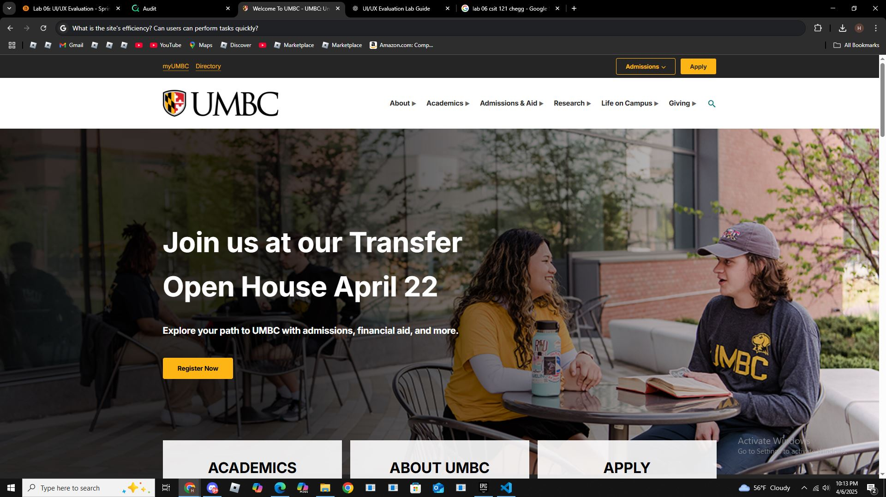

University of Maryland, Baltimore County (UMBC)
students, faculty, staff, Alumni.
The Site has menus and categories labled Academics, Admissions, Research, and Campus Life.
The Audit score for UMBC is 95.
The UMBC website is effictive because people can easily naviagate through like finding majors, applying, or locating campus, Maps, resources in well-organized navigation bar and also a search feature.
The search tool and naviagtion bars helps going through the site without looking too hard.
clean, and full of helpful info for student,staff. It is welcoming to students and gives info about everything like all the majors, classes etc.
They can put alt text in all the pictures
Screenshot of the UMBC homepage:
